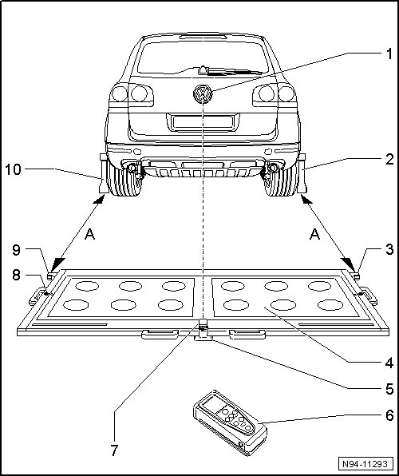
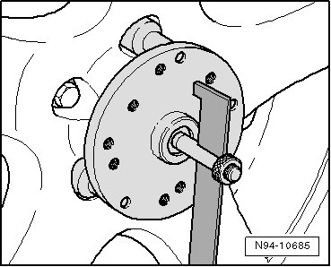
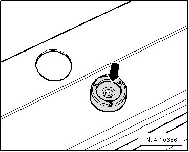
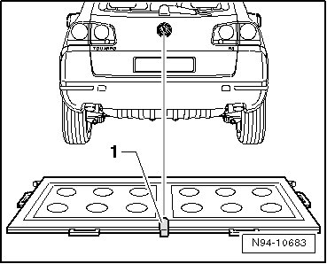
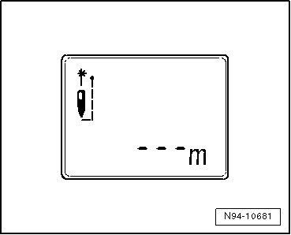
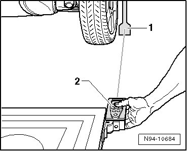
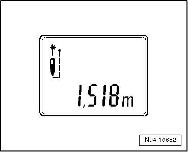
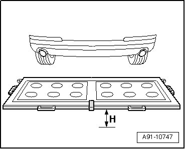

Rear Vision Camera: Testing and Inspection
Rearview Camera System, Calibrating
Special tools, testers and auxiliary items required
• Calibration Device (VAS 6350)
After performing service work on the vehicle, it may be necessary to calibrate the rear view camera system anew. In detail, this is the case after:
• removing and installing rear view camera
• replacing the control module for rear view camera system
• after repair work performed on rear lid following an accident
• after a vehicle alignment
• after performing a repair at front or rear axle
--> [ Preparing for Calibration ]
--> [ Preliminary Work for Calibration ]
--> [ Rearview Camera System, Calibrating ]
Preparing for Calibration

1 Volkswagen logo
• The laser point is aligned on the center of the Volkswagen logo
2 Wheel center sensor (VAS 6350/1)
3 Right-side angle bracket for mounting measuring unit for distance measurement
4 Calibration Device (VAS 6350/4)
• Distance between the angled brackets on the calibration device (--> [ (Item 3) Right-side angle bracket for mounting measuring unit for distance
measurement ] or --> [ (Item 9) Left-side angle bracket for mounting measuring unit for distance
measurement ]) and the paddles on the rear wheel center wheel mounts: 1.2 m - 1.7 m - dimension A -
5 Plastic foot
• Total of three on the bottom side of the calibration device
• adjustable in order to adjust the horizontal position of the calibration device
6 Spacing laser (VAS 6350/2)
• Notes on operation, --> operating instructions
7 Line Laser (VAS 6350/3)
• Switching on and off --> operating instructions
8 Level on the calibration device
• to check the horizontal position of the calibration device
9 Left-side angle bracket for mounting measuring unit for distance measurement
10 Wheel center sensor (VAS 6350/1)
Preliminary Work for Calibration
Preparations must be made before the calibration procedure can be performed with the vehicle diagnosis, testing and information system.
Requirements:
• Place vehicle on a solid, level surface.
• Engage the parking brake - the vehicle must not move during calibration.
• On vehicles with air suspension, set the suspension height to " Auto" while the engine is running. Then bring the suspension into vehicle lift mode. Vehicle Lift Mode (level control system is switched off).
• No persons may be in the vehicle interior during the calibration.
• Do not open and close the vehicle doors during calibration.
• Make sure the vehicle is at curb weight *.
* Curb weight means: the weight of the vehicle when it is ready for driving (full fuel tank, spare wheel, vehicle tool kit, vehicle jack).
Special tools, testers and auxiliary items required
• Vehicle Diagnosis, Testing and Information System
• Calibration Device (VAS 6350)
Connect Vehicle Diagnosis, Testing and Information System.
- Check which hole circle the rims have.
- Install the wheel pick-ups which fit the Touareg: For this purpose, secure three adapters for wheel mounting bolts for Touareg on the hole circle with designation "120" or "130" on each wheel pick-up.
- Attach paddles to both wheel pick-ups (VAS 6350/1) and secure them with clamping screw.
- Place Wheel Center Sensor (VAS 6350/1) on wheel bolts on rear wheels. When doing this, the wheel pick-ups are positioned by the O-rings in the adapters and held in place.

• Attach wheel pick-ups on to wheels so that any installed anti-theft wheel mounting bolts are not connected to the wheel pick-ups.
- Set the paddles via the clamping screw so that they are free to move just above the ground.
Make sure paddles move easily.
- Position the calibration device (VAS 6350/4) behind the vehicle with a distance of 1.2 m to 1.7 m between the angled brackets on the calibration device and the paddles at the rear wheel center wheel mounts as shown in the overview illustration - dimension A - --> [ (Item 4) ].
- Bring Calibration Device (VAS 6350/4) to a horizontal position. To do so, twist plastic feet under calibration device so that air bubble in spirit level is located exactly in the center of the indicator - arrow -.

- Switch on the laser on the calibration device - 1 - and align the entire calibration device so that laser beam strikes on center of vehicle rear end above the VW logo.

- Switch on the Distance Laser (VAS 6350/2) for distance measurement with the ON button. The following display appears and laser switches itself on:

- Hold distance laser for distance measurement - 2 - flush into angle bracket on one side of calibration device as shown in the illustration, distance laser must make contact firmly on angle bracket when doing this.

- Ensure the laser beam from the distance laser for distance measurement contacts the paddle - 1 - at the lower, enlarged part.
If this is not the case, paddles must be corrected accordingly via clamping screws on the wheel pick-ups.
- Hold the distance laser for distance measurement firmly by hand in the angled bracket on the calibration device with the laser beam visible on the paddle. Now press the ON button briefly for the distance measurement. When doing this, the following display appears on screen:

The distance measurement is specified on the display in "meters ".
- Note the value read off.
- Repeat measuring procedure in the same manner for the other rear wheel on the other side of the calibration device.
The distance value must be the same on both sides. If the value is not identical, align the calibration device only as long until the values on both sides are identical.
When aligning the calibration device, make sure the line laser laser beam still strikes the center above the VW logo and the indictor in the level stays centered. If necessary, make further corrections accordingly.

- Measure the height of the calibration device, dimension - H - (top edge platform - floor).
The distance dimension that was measured, the height of the calibration device and the height of the center of the rearview camera lens must be entered in the vehicle diagnosis, testing and information system in " millimeters" during calibration.
Rear view camera system, calibrating --> [ Rearview Camera System, Calibrating ].
Rearview Camera System, Calibrating
• Observe the points regarding the preparation for calibrating --> [ Preliminary Work for Calibration ]
- Connect Vehicle Diagnosis, Testing and Information System.
- In the vehicle diagnosis, testing and information system , select "Guided Functions" or "Guided Fault Finding".
- In the "Vehicle selection" menu, enter the corresponding data for the vehicle and the following menu items one after another.
• Rearview Camera System
• Functions
• Rearview Camera System, Calibrating
The vehicle diagnosis, testing and information system guides the user through the calibration procedure.